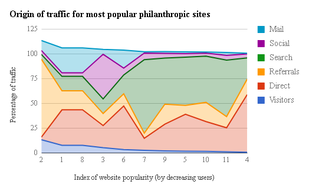

Academics
University of Southern California
Viterbi School of Engineering ➤
August 2015 - December 2018
Major: Computer Science/Business Administration ➤
Finance GPA: 3.52
Coding GPA: 3.48
Classes Taken
Accounting, Algorithms, Applied Linear Algebra, Artificial Intelligence, Data Structures, Discrete Methods, Econ, Finance, Statistics
General skills
Learns quickly, excellent with instruction, excellent at problem solving, timely, well organized, highly self-motivated
General competencies
Accounting + General Finance, Algorithmic Optimization, Candlestick Analysis, Coding Design Principles, Effective Organizational Design, Headless Browsing, Library Utilization, MS Office, Programming Theory, Risk Analysis, Terminal, Value + Growth Stock Analysis
Coding
Chief of Artificial Intelligence at Portfolio Insider ➤
Worked on humanizing financial data and making it accessible to everyone
Software Engineer for Google ➤
Worked on Ads team leveraging human capital and machine learning to show appropriate Ads
Software Architect for Mutual Securities ➤
Designed system to sort through 1,000+ entries by custom heuristic fits and provide recommendations to 100+ clients facilitating > 2B in transactions and > 50% increase in profits
Programmer for Kirkland Messina ➤
Architect for a large scale automation project. Coded a python program that could run autonomously for long periods on a server.
Systems programming for Savant ➤
Installed and customized home automation systems for high end homes and businesses as well as worked on programming new functionality for upcoming product releases
Recent projects
Automated arbitrage program
Brute force MD5 cracker
Scrabble with visual UI
This website
Coding skills
C++, CSS, HTML, Java, Javascript, MongoDB, Pandas, Prophet, Python, RegEx, SciPy, Selenium, SQL, XML
Example projects
_=[print(''.join(x)+str(__import__('time').clock())) for x in __import__('itertools') .chain(*map(****** i:__import__('itertools').p***********(__import__('string') .printable, i),r****(8))) if __import__('hashlib').md5(''.join(x).encode()).hexdigest() in open("h", "r").read().split("\n")]
One line list comprehension to brute force MD5 hack (modified to prevent abuse)
Finance
Head of Investor Relations at Portfolio Insider ➤
Worked on venture capital and investor relations
Software Engineer for Google ➤
Software Architect for Mutual Securities ➤
Helped auto-generate personalized portfolio recommendations and highlight rich/cheap analysis for fixed income facilitating > 2B in transactions and > 50% increase in profits
Programmer for Kirkland Messina ➤
Automated game theory to optimize pricing strategy and minimize operational expenses
Financial Intern for Candle3 ➤
Assisted with financial presentations, contacting clients
Trojan Investing Society Leaders ➤
Worked with members to attend seminars pertaining to financial investment in addition to staying up to date on market and company trends and the financial industry
Recent projects
Designed high-tech start up for class including business plan
Maintaining active portfolio
Business skills
Experienced with business fundamentals, strong teamwork, and leadership abilities, communicates effectively
Example projects
Proposition for acquiring a company for case competition
Data Analytics
Software Engineer for Google ➤
Worked on Ads team leveraging human capital and machine learning to show appropriate Ads
Software Architect for Mutual Securities ➤
Generalized process to sorted through 1,000+ entries to provide recommendations to 100+ clients by custom heuristic fits and contingencies to reduce 3 hour process into ~3 minute script
Programmer for Kirkland Messina ➤
Managed large quantities of data and mass data collection including maintaining database adding 70,000+ entries per hour
Financial Intern for Candle3 ➤
Analyzed and organized data in excel
Recent projects
GPA calculation sheet to weigh different categories
Data analytics skills
SQL, Data Modeling, Excel programming, Google sheets
Example projects
Origin of traffic as a percentage of total website traffic for the top ten philanthropic websites
Visualization of data